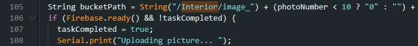

Proyecto final
Presentación
Videos del funcionamiento de los sensores
Cámaras ESP32CAM
Sensores de apertura
Para ventana
Para puerta
Timbre y sensor de temperatura
Sensor de zona segura - láser
API general de los sensores (sin incluir las camaras)
Puedes consultar el link de nuestro repositorio en Github para ver nuestra API en el siguiente link.
API de las camaras
Puedes consultar el link de nuestro repositorio en Github para ver nuestra API en el siguiente link.
Links de códigos
El código de las camaras ESP32CAM es el mismo, solo cambiamos en la línea 105 el nombre de la carpeta, a una camara le asignamos que mandara las fotos a la carpeta "Exterior" y la otra camara a la carpeta "Interior".
